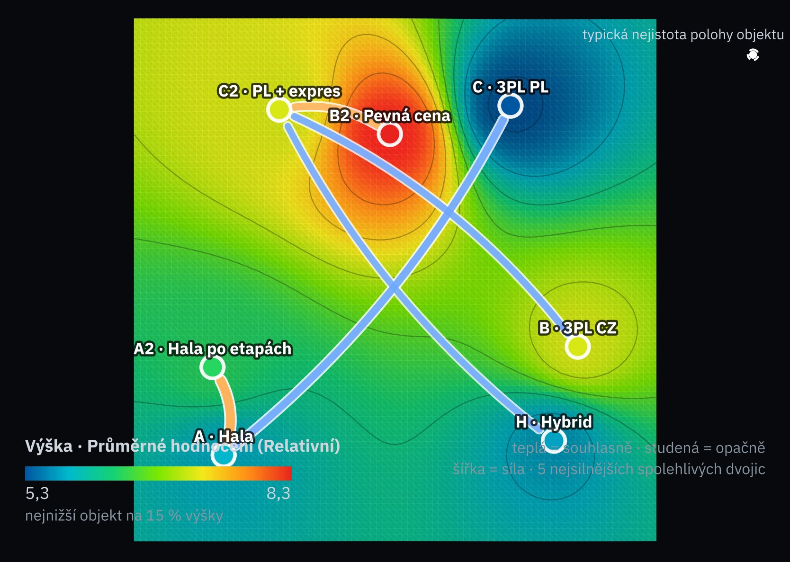
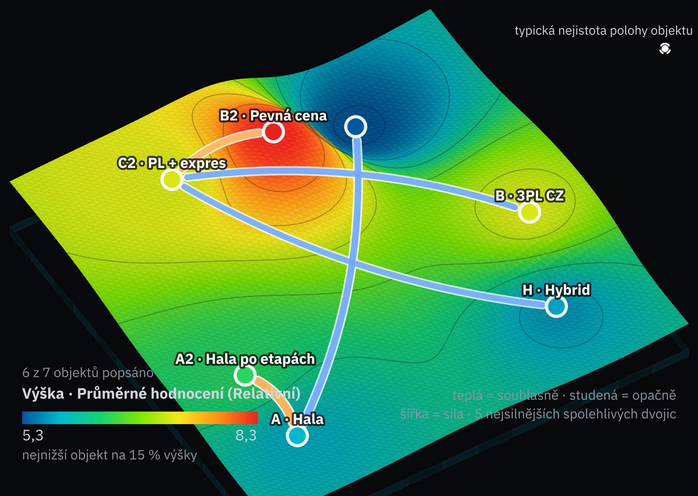
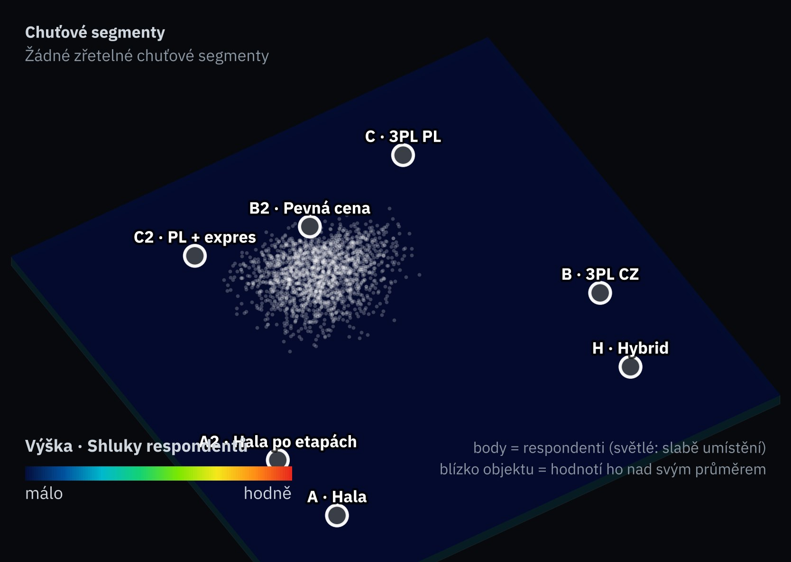
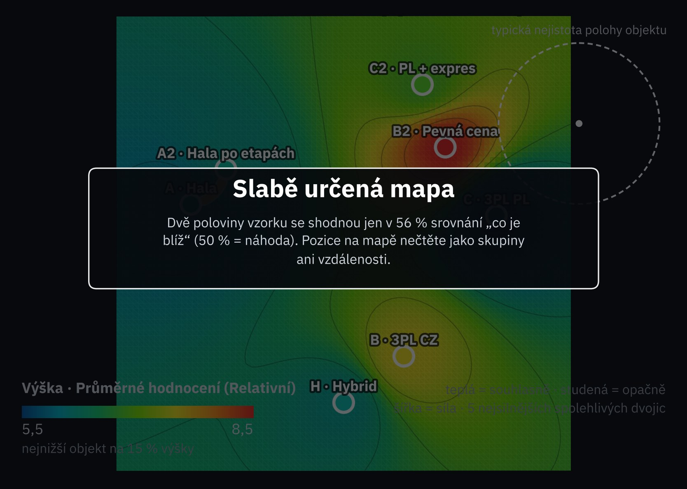
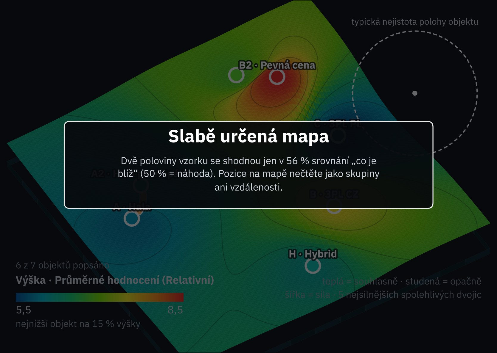

Mapa budoucností
aia-sociomap-5 · 2 000 budoucností jako řádky · 7 objektů


Co spočítal engine
Nejsilnější spolehlivé dvojice
teplá: daří se jim spolu · studená: když jedné, druhé ne
Spočítal engine aia-sociomap-5 a nakreslil renderer AIA, kterým zpráva kreslí mapy. Místo respondentů jsou řádky 2 000 budoucností s vahami a nejistými buňkami podle jistoty; v pohledu s body engine nazývá budoucnosti respondenty. Pozor: spolehlivost dvojic tu roste s počtem budoucností, který volíme my, ne s počtem lidí. Statistika enginu je stavěná na respondenty, proto mapa zůstává interní.
Mapa profilu z indikátorů
aia-sociomap-5 · 15 indikátorů jako řádky

Co spočítal engine
Nejsilnější spolehlivé dvojice
teplá: daří se jim spolu · studená: když jedné, druhé ne
Řádky jsou indikátory: každý „hodnotí“ všechny objekty 1–10, jako v analýze cloudu. Mapa staví k sobě objekty, které bodují podobně napříč indikátory.
Budoucnosti: kdo je nejlepší, když se váhy a nejisté buňky hýbou
2 000 budoucností · váhy kolem schválených · šum podle jistotyPodobnost profilů
číslo 0–10 jako v analýze cloudu · r profilu · s = souběh v budoucnostech| A | A2 | B | B2 | C | C2 | H | |
|---|---|---|---|---|---|---|---|
| A | — | 9 r 0,70 s 0,59 | 1 r −0,71 s −0,49 | 6 r 0,17 s −0,37 | 1 r −0,76 s −0,63 | 4 r −0,22 s −0,13 | 5 r 0,01 s 0,09 |
| A2 | 9 r 0,70 s 0,59 | — | 2 r −0,66 s −0,41 | 4 r −0,16 s −0,24 | 3 r −0,38 s −0,56 | 4 r −0,16 s −0,02 | 3 r −0,45 s −0,31 |
| B | 1 r −0,71 s −0,49 | 2 r −0,66 s −0,41 | — | 5 r −0,06 s −0,01 | 6 r 0,18 s −0,02 | 4 r −0,19 s −0,59 | 6 r 0,18 s 0,21 |
| B2 | 6 r 0,17 s −0,37 | 4 r −0,16 s −0,24 | 5 r −0,06 s −0,01 | — | 4 r −0,12 s 0,11 | 3 r −0,36 s 0,28 | 5 r 0,03 s −0,30 |
| C | 1 r −0,76 s −0,63 | 3 r −0,38 s −0,56 | 6 r 0,18 s −0,02 | 4 r −0,12 s 0,11 | — | 6 r 0,17 s 0,18 | 4 r −0,11 s −0,12 |
| C2 | 4 r −0,22 s −0,13 | 4 r −0,16 s −0,02 | 4 r −0,19 s −0,59 | 3 r −0,36 s 0,28 | 6 r 0,17 s 0,18 | — | 3 r −0,37 s −0,56 |
| H | 5 r 0,01 s 0,09 | 3 r −0,45 s −0,31 | 6 r 0,18 s 0,21 | 5 r 0,03 s −0,30 | 4 r −0,11 s −0,12 | 3 r −0,37 s −0,56 | — |
Podbarvené: |r| ≥ 0,67. Souběh s je korelace součtů napříč budoucnostmi po odečtení průměru budoucnosti; kladný = daří se jim ve stejných budoucnostech.